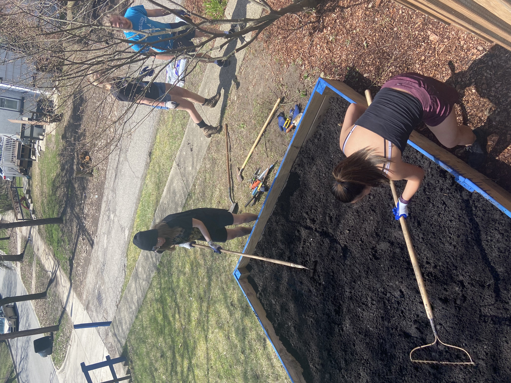

Alpha Chi Sigma
Alpha Beta Chapter: Professional Chemistry Fraternity of the University of Michigan
Check out our rush calendar!

Our Pillars
To Bind
To Strive
To Aid


Community Outreach Chairs

Community outreach is a very exciting chair position because it allows for Alpha Chi Sigma to give back to the Ann Arbor community and beyond to try to make the world a little better in the different ways we can. To reflect the chemistry that our professional fraternity stands for, we try to do science related events such as supporting children in their scientific curiosity through events like FEMMES and science Olympiad. We also do other events that we feel we can make a difference with, such as Ukrainian English tutoring, helping ill cats, habitat for humanity, and more. Community outreach is always expanding and changing to try to best fit community needs.
Professional Chairs
As a professional fraternity, we help all of our members navigate their academic and professional futures. Through study tables, speaker series, and research presentations by brothers, our members benefit from a support network for their classes, as well as exposure to all the different research going on on campus, both by brothers and professors. And our scope is not limited to the University of Michigan, last year we hosted Dr ?????? from the University of Chicago! Our aim is to help ….
Sustainability Chair
As Chemists, we have a unique responsibility to the Earth. The compounds we synthesize, drugs we develop, and chemicals we produce and use have a direct relationship with our environment. Starting with Anastas and Warner in 1998, the focus has shifted more toward green chemistry as a way to do our part for the environment. However, our Chapter recognizes the importance of doing more for the earth and thus coordinates additional efforts to live sustainably and preserve the planet for future generations of chemists. Our chapter's sustainability efforts this year were centered on promoting local businesses, recycling, waste reduction, and garden preparation. We are fortunate to be located in Ann Arbor, which provided us with ample opportunities to collaborate with sustainable businesses. Our visit to the Bring Your Own Container store allowed us to stock up on household supplies in our own reused containers, thereby reducing waste and supporting a local enterprise. We also shopped at the Ann Arbor Farmers Market, which helped us reduce our carbon footprint and invest in our community. As part of our efforts to prevent recyclables from ending up in the trash, we began collecting cans and bottles for recycling, which also generated funds through bottle deposits. We hope to allocate these resources toward future sustainable projects. Additionally, we started garden preparations early by sprouting seeds indoors in repurposed egg cartons, in anticipation of our summer garden. The garden is an excellent way to promote healthy eating habits, save money, and encourage our members to take care of the environment.